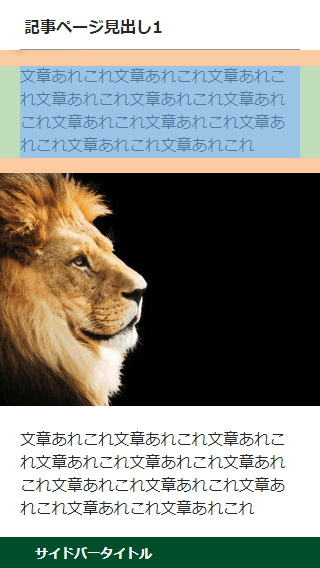

画像の大きさを最適化する max-width:100%;
レスポンシブウェブデザインでスマホに対応する際、PCサイト用の画像の大きさのままだと画面からはみ出てしまうことがあります。スマホの解像度は320px程度のため、幅320px以上の画像を掲載している場合、小型スマホでは崩れて表示されるはずです。
これを回避するには、全ての画像の大きさを300px程度で作成すればよいわけですが、ガラケーサイトとは違いスマホはフルブラウザのため、スタイルシートで表示を最適化することをおすすめします。
具体的には、レスポンシブウェブデザインでPCサイト用とスマホ用のCSSを切り分けたのち、スマホ閲覧時に適用されるCSSの「img」の箇所に「max-width:100%;」などと指定しておくとよいでしょう。
■画像の大きさを最適化する例
img {
max-width: 100%;
height: auto;
}
この「max-width:100%;」は、「画像の大きさの最大値」が「親要素のwidth幅の100%の値」という意味になります。
そのため、画像が親要素の幅よりも大きくなることはなく、スマホ画面内に収めることができます。また、このままでは横幅のwidth幅だけが縮小されてしまい、高さが調整されずに画像が歪んでしまうため、「height:auto;」も指定して高さも最適化します。
この「max-width」はあくまで最大値の意味のため、もともとの画像の大きさがスマホ画面内に収まる200px程度の場合には拡大されずにそのまま表示されます。500pxなどのはみ出る大きさの場合にのみ、縮小して表示されると考えておくとよいでしょう。
「max-width:100%;」は親要素よりも大きい場合にのみ縮小される
例えば、幅「200px」高さ「300px」のdiv要素があったとします。
#sample {
width:200px;
height:300px;
}
この領域に、幅「100px」高さ「100px」の画像を掲載しました。
<img src="blue.png" width="100" height="100">
すると、当然このように表示されます。
ここで青い画像に「max-width:100%;」を指定します。
img {
max-width:100%;
}
すると何も変わりません。
これは「親要素のwidth幅が200px」のため、画像のwidth幅の「最大値」も200pxにはなりますが、あくまで「最大値」であるため、実際の画像のwidth幅が100pxで200px以内に収まっている場合には拡大されずにそのままの大きさで表示されるからです。
同様に「max-width:200%;」としても、親要素の幅200pxの200%で400pxが最大値の意味になり、これも400px以内に収まっている場合にはそのまま表示されます。
次に「max-width:25%;」に変更してみました。
img {
max-width:25%;
}
この場合、親要素200pxの25%で「幅50pxが最大値」になります。そのため、青い100pxの画像はwidth幅が最大値の50pxまで縮小して表示されます。ただし、これではwidth幅のみが縮小されて画像が歪んでしまうため、「height:auto;」も指定します。
img {
max-width:25%;
height:auto;
}
すると高さも自動で調整されてこのように表示されます。
ただし、max-widthを25%にしても、必ずしも画像の大きさが縮小されるわけではなく、あくまで画像の大きさが親要素のwidth幅の最大値を超えた場合のみ縮小されます。例えば、仮にこの青い画像が100pxではなく、10pxだった場合には最大値の50px以内に収まるため、そのままの大きさで表示されます。
次に、親要素200pxよりも大きい、幅「250px」高さ「250px」のオレンジの画像を用意しました。
<img src="orange.png" width="250" height="250">
この画像を幅「200px」高さ「300px」のdiv要素に掲載するとはみ出てしまいます。
スマートフォンで表示した際、画像がはみ出てしまうのはこのパターンが多いかもしれません。
このような場合、上記のようにオレンジの画像に「max-width:100%;」と「height:auto;」を指定すると、以下のように親要素の領域内に縮小されて表示されるようになります。
スマホ用に画像の大きさを最適化する場合、画像にこの「max-width:100%;」と「height: auto;」を指定しておくとよいでしょう。
■Dreamweaverでの注意点
ちなみに、ホームページ作成ソフトのDreamweaverを使用している場合、CSSでこの指定をすると画像の挿入時に「width」と「height」が自動で入力されなくなります。クロークを実行するなどしてサーバー上のCSSにのみ記入しておくことをおすすめします。
画像に「width:100%;」は使わない方がよい
画像に「max-width:100%;」ではなく、単に「width:100%;」と指定した場合、はみ出るか否かに関わらず、画像の大きさを親要素のwidth幅まで無条件で拡大させることができます。この場合でも「height:auto;」を指定することで画像が歪まずに表示することができます。
「max-width:100%;」の場合は最大値の意味のため、実際の大きさ以上には表示されませんが、この「width:100%;」を指定すると画像が領域の最大まで拡大して表示されます。
けれども、この「width:100%;」を指定した場合、「1px」などの小さな画像も拡大してしまうデメリットがあります。
サイト内ではアフィリエイト広告やアクセス解析などで小さな「1px」の画像を使用することも多いですが、「width:100%;」を指定した場合、この「1px」の画像についても領域の最大値まで拡大されてしまい、もしその画像に色がついていない場合は大きな空白の領域が表示されてしまうことになります。
また、小さな画像を拡大させてしまうと画質がぼやけてしまうため、画像に「width:100%;」を指定をするのは避けた方がよいでしょう。
小さな画像を拡大させて表示させるのではなく、あらかじめ大きめの画像を使用し、はみ出る部分については「max-width:100%;」と「height: auto;」で縮小させて表示させることをおすすめします。
■AMPページの場合
ちなみに、AMPページについては、画像に「layout」属性を使用することで簡単に対応することができます。「width:100%;」を指定する際はlayout="responsive"、「max-width:100%;」の場合はlayout="intrinsic"を画像に設定しておくとよいでしょう。
スマホ閲覧時にデバイス幅まで画像を最大化する方法
レスポンシブウェブデザインで画像を最大化する場合、親要素にpaddingを指定しているとデバイス幅まで拡大させることができません。
親要素にpaddingを設定している分、左右に余白が生じてしまうことになります。
この場合、一旦、親要素のpaddingを解除することをおすすめします。
このように左右の余白を解除して画像をデバイス幅まで拡大させたのち、改めてpタグやタイトルタグなどにpaddingを設定していくとよいでしょう。

ここで画像にもpタグを設定してしまうと同じように余白ができるため、画像には<div>や<span>などのタグを設定することをおすすめします。